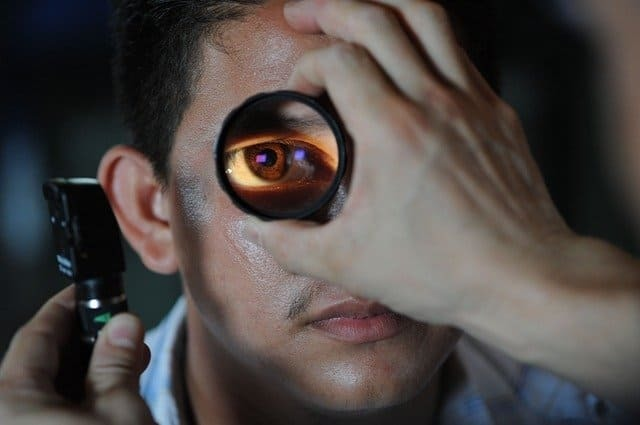

ポスナーシュロスマン症候群の鍼灸
片眼に発作的な眼圧上昇と軽度の炎症を繰り返す続発緑内障です。発作時は眼科治療が必須で、寛解期の体調管理を支えます。
まず知っておきたい要点と施術方針
若年から中年男性に多く見られる続発緑内障の一種で、片眼に発作的な虹彩毛様体炎と急激な眼圧上昇（40〜60mmHg）を繰り返します。明確な原因は未解明ですが、サイトメガロウイルスなどのウイルス感染説、自己免疫説、ストレスの関与などが考えられています。強い眼痛は少ないものの、放置すると緑内障性視野障害につながるため、発作時の眼科治療と継続観察が不可欠です。（公式解説）
このようなお悩みはありませんか？
- ✓片目だけ急にかすみ目や霧がかかったように見える
- ✓光の周りに虹の輪が見える（虹視）ことがある
- ✓強い痛みは少ないが目の圧迫感や軽い充血が出る
- ✓眼科で点眼管理をしており再発予防の体調管理をしたい
当院の施術アプローチ
院長YouTube解説・関連動画
公開日：２０２１年 ６月１１日
更新日：２０２３年 ９月１９日
本日はポスナーシュロスマン症候群について解説させていただきます。

☆本記事の内容
- •ポスナーシュロスマン症候群とは
- •ポスナーシュロスマン症候群の原因
- •ポスナーシュロスマン症候群の症状
- •ポスナーシュロスマン症候群の改善方法
- •ポスナーシュロスマン症候群のまとめ
- •ポスナーシュロスマン症候群は、発作的に虹彩毛様体炎が起こり眼圧が高度に上がる
- •ポスナーシュロスマン症候群の原因は、明らかになっていない
- •ポスナーシュロスマン症候群の症状は、眼圧が突然上昇すること
- •症状が落ち着いた後も、医師に経過を見てもらうことが大切
- •視野障害が起こらないようにするために
銀座そうぜん鍼灸院の宗前です。
このページを書いている私は、鍼灸師として１３年、担当した利用者様数８０，０００人を誇り、病気の休職者３００人を社会復帰できるまで回復させてきた実績があります。
ポスナーシュロスマン症候群の原因は、明らかになっていない
ポスナーシュロスマン症候群の原因は、明らかになっていません。
原因が何かということについて言われている説は色々あります。ストレス説や神経異常説、自己免疫説、ウイルス説、一過性線維柱帯炎説などです。
しかし、どの説も詳しくはわかっていないため、今のところポスナーシュロスマン症候群の原因については解明されていません。
ポスナーシュロスマン症候群は、急性の片側緑内障発作を特徴とする眼の病気です。ポスナーシュロスマン症候群は、主に若い成人に突然発症するものとされています。
免疫応答の異常:PSSの発症には、体の免疫応答の異常が関与している可能性が考えられています。この理論によれば、ウイルス感染などの外的要因がトリガーとなり、体の免疫システムが眼の組織に攻撃を開始するというものです。
ウイルス感染:一部の研究では、特定のウイルス、特にサイトメガロウイルス（CMV）との関連が示唆されています。CMVは、PSSのの眼水から検出されることがあると報告されています。
遺伝的要因:ポスナーシュロスマン症候群の発症には遺伝的要因が関与している可能性も考えられていますが、具体的な遺伝子や遺伝子変異についての確固たる証拠はまだ得られていません。
血管の異常:一部の専門家は、眼内の血管の炎症や痙攣が症状の一因となっていると考えています。
トリガー要因:ストレスや怪我などのトリガー要因がPSSの発作を引き起こす可能性が考えられていますが、これに関する研究結果は限られています。
病態の理解:ポスナーシュロスマン症候群の特徴的な症状は、急激な眼圧の上昇です。この症候群の病態は、虹彩と網膜の間に存在する仲裁角の炎症に起因すると考えられています。炎症は眼内の水の排出経路を塞ぎ、眼圧が上昇します。長期にわたる高眼圧は、視神経を傷つける可能性があります。
総じて、ポスナーシュロスマン症候群の原因は完全には明らかにされていませんが、上述の要因や仮説が現在のところの理解を示しています。
ポスナーシュロスマン症候群の症状は、眼圧が突然上昇すること
ポスナーシュロスマン症候群の症状は、眼圧が突然上昇することです。
眼圧が上昇するとき、眼がかすんだり圧迫感を感じたりすることがあります。発作の時に視力の低下や霧視、虹視、充血などが起こることがあります。
ポスナーシュロスマン症候群の特徴は自覚症状があまりないということで目の痛みが起こることはあまりありません。
急激な眼圧の上昇:PSSの最も特徴的な症状は、急激な眼圧の上昇です。通常、眼圧は10〜21mmHgの範囲にありますが、PSSの発作時には、この数値が大幅に上昇することがあります。
虹彩の炎症:虹彩や前房（角膜と虹彩の間のスペース）に微細な炎症を伴うことがあり、これにより前房に細かい白血球の沈着が見られることがあります。
軽度の疼痛と不快感:一部では、軽度の疼痛や眼の不快感を報告します。これは、眼圧の上昇や炎症によるものと考えられています。
視力の低下:一時的な視力の低下が発生することがあります。これは、高眼圧や炎症の影響によるものです。
透明の角膜浮腫:角膜内に水分が貯留されることで、角膜がぼやけたり浮腫を起こすことがあります。
瞳孔の異常:一部では、瞳孔が小さくなる、または不規則になることがあります。
発作の短期間:PSSの発作は通常短期間（数時間から数日）で、突然始まり、同様に突然終わることが多いです。
症状の特性と対応:ポスナーシュロスマン症候群の発作は一般的に自己限定的であり、長期にわたる改善を必要とすることは少ないです。しかし、繰り返し発作を起こす場合や、高眼圧が持続する場合は、緑内障のリスクが高まる可能性があります。
この病気は比較的まれであり、その原因や病態は完全には解明されていません。
ポスナーシュロスマン症候群は、発作の時に眼圧降下剤と抗炎症剤を使って改善を行います。
それでも眼圧が高いと判断された場合は、炭酸脱水酵素阻害薬や高浸透圧利尿薬で改善を行います。
ポスナーシュロスマン症候群の眼圧が高い症状は数時間から数週間で改善しますが、多くの場合は、数ヶ月から数年後再発します。そのため、症状が落ち着いた後も、医師に経過を見てもらうことが大切です。
眼圧降下薬:最も一般的に使用される改善法は眼圧を低下させる点眼薬です。これらには、プロスタグランジンアナログ、ベータ遮断薬、アルファアゴニスト、カーボニックアンヒドラーゼ阻害薬などが含まれます。これらの薬は、異なるメカニズムで働き、眼圧を低下させる助けとなります。
ステロイド点眼薬:炎症の緩和を目的として、ステロイドの点眼薬が処方されることがあります。プレドニゾロンアセテートなどの点眼薬が使用され、短期間で症状の緩和が期待されます。
緑内障手術:重度の症例や、薬物治療による眼圧のコントロールが難しい場合、緑内障手術が選択されることがあります。トラベクレクトミーやシャント手術など、様々な手術手技が存在しますが、それぞれの状態やリスクに応じて選択されます。
レーザー:トラベクロプラスティやシクロフォトコアギュレーションといったレーザーも眼圧をコントロールする方法として用いられることがあります。
対処法:軽度の疼痛や不快感のための鎮痛薬や、角膜浮腫のための塩類製剤など、症状に応じた補助的な改善が行われることもあります。
定期的なフォローアップ:PSSでは、繰り返し発作を起こす可能性があるため、フォローアップが重要です。これにより、緑内障のリスクや他の合併症を早期に改善することが可能となります。
改善の注意点:ポスナーシュロスマン症候群の改善は、一般的には発作が起こった時点でのものとなりますが、長期的な眼圧の管理や緑内障のリスクの評価が必要です。また、ステロイド点眼薬の長期使用は、眼圧上昇や白内障のリスクを増加させる可能性があるため、注意が必要です。
以上が、ポスナーシュロスマン症候群の改善法に関する情報です。この病気の改善は、主に眼圧の管理と症状の緩和を目的としています。
ポスナーシュロスマン症候群は、特定の原因が認められるわけではないが、特徴的な急性の眼圧上昇と関連した炎症の発作を伴う眼の病気です。主な改善の目的は、発作時の眼圧上昇をコントロールし、関連する炎症を軽減することです。
1. 眼圧降下薬:プロスタグランジンアナログ: 例としてはラタノプロストやトラボプロストなど。これらの薬は、眼圧を降下させる効果があり、眼の水 humor の排出を増加させます。
ベータ遮断薬: 例としてはティモロールやベタキソロールなど。これらの薬は、水 humor の生成を減少させて眼圧を降下させます。
アルファアゴニスト: ブリモニジンなど。水 humor の生成を減少させるとともに、排出を促進します。
カーボニックアンヒドラーゼ阻害薬: 例としてはドルゾラミドやブリンゾラミドなど。これらは水 humor の生成を抑えることで眼圧を降下させます。
適応する人: 発作時に急激な眼圧上昇が見られる場合。また、眼圧が高い状態が持続する場合や、再発する可能性が高い場合。
2. ステロイド点眼薬:このカテゴリーの薬は、眼内の炎症を軽減する効果があります。プレドニゾロンアセテートやロトプレドノールエタボン酸などがこのカテゴリーに属します。
適応する人: PSSに関連する急性の虹彩の炎症や前房の炎症を示す場合。ただし、ステロイド点眼薬の使用は眼圧上昇のリスクを伴うため、使用は慎重に行われる必要があります。
注意: ステロイド点眼薬は、長期使用すると眼圧上昇や白内障のリスクが増加する可能性があるため、定期的な眼圧のモニタリングと短期間の使用が推奨されます。
3. 対処するための薬:一部では、軽度の疼痛や不快感を軽減するための非ステロイド性抗炎症薬（NSAID）点眼薬や、角膜浮腫を軽減するための塩類製剤が処方されることがあります。
適応する人: PSSの症状や合併症に応じて。
以上が、ポスナーシュロスマン症候群の改善に使用される主な薬の種類とその効果、適応する人に関する情報です。
ポスナーシュロスマン症候群は緑内障の1つです。しかし、高い眼圧になる時間が短いため、視野が狭くなったり視力が落ちることは少ないです。
しかし、ポスナーシュロスマン症候群によって高度の視野障害が残るケースも稀にあります。発作が起きた時には、早めに適切な改善を行うことが視野障害の予防になります。
ポスナーシュロスマン症候群では、発作が起きた時には適切な改善を行うこと、症状が落ち着いた後も医師に経過観察を行ってもらうことが大切なのです。


眼のお悩みのツボ図解とセルフケア
実際の施術ではお一人おひとりの体質・症状に合わせて選穴しますが、眼科領域の補完ケア（ドライアイ・眼精疲労・視神経ケア研究）の臨床でよく用いられる代表的なツボの目安です。

📌 代表的なツボの詳細一覧表を開く（6穴） ▼
| ツボ名 | 位置の目安 | 主な狙い | セルフケアの注意点 |
|---|---|---|---|
| 睛明（せいめい） | 目頭と鼻の付け根の間のくぼみ | 眼精疲労・ドライアイ・眼周囲の血流促進 | 眼球は絶対に押さない（緑内障の方は圧迫厳禁） |
| 攢竹（さんちく） | 眉頭の内側端のくぼみ | 目の重だるさ・眼精疲労・前頭部の緊張緩和 | 骨縁を軽く支える程度にし眼球へ力を逃がさない |
| 太陽（たいよう） | 眉尻と目尻の中間からこめかみ側へ指1本後ろ | 眼精疲労に伴うこめかみ頭痛・眼輪筋緩和 | 血管・神経が集まるため円を描くように優しく |
| 四白（しはく） | 瞳孔の真下、目の下の骨縁から指1本分下 | ドライアイ・目の下の循環・眼輪筋疲労ケア | 眼窩下神経出口のため強圧禁止、軽圧で |
| 風池（ふうち） | 後頭部の生え際、耳後ろと首筋の間のくぼみ | 後頸部の筋緊張解除による眼血流・自律神経ケア | 首を反らしすぎず斜め上へゆっくり |
| 合谷（ごうこく） | 手の甲、親指と人差し指の骨が交わる手前 | 顔面・眼周囲の循環促進、頭痛緩和の遠隔穴 | 妊娠中は強い刺激を避ける |
国際査読論文の科学的エビデンス
国際的な医学データベース（PubMed・Cochrane等）で報告されている眼科領域の補完ケア（ドライアイ・眼精疲労・視神経ケア研究）領域の代表的な査読済み鍼灸研究をまとめています（標準治療との併用や研究上の限界を含めて正確に掲載）。
📚 査読論文データ・PubMed出典リンクを開く（4件） ▼
| 年・研究デザイン | 対象・規模 | 主な結果 | 限界・出典 |
|---|---|---|---|
| 2024年 メタ解析 | ドライアイ 16試験（n=1,383：人工涙液併用） | BUT（SMD 1.25, P<0.0001）、シルマー試験（SMD 1.55, P<0.0001）、角膜染色・総有効率（OR 4.09）が有意改善。 | 自覚症状OSDIは有意差なし（P=0.15）。人工涙液との併用評価。 Medicine (PMID: 38181299) |
| 2019年 二重盲検RCT | ドライアイ 49名（米国・6か月追跡） | 実鍼群はOSDIスコアが1週〜6か月まで有意改善（6か月p<0.01）、乾燥感・充血も有意軽減。 | 小規模・客観的涙液指標（TBUT等）は有意差なし。 Clin Ophthalmol (PMID: 31114151) |
| 2020年 Cochraneレビュー | 緑内障・高眼圧症 3 RCTs（n=137） | 一時的な眼圧低下の報告はあるが8週時点で差消失、視力は有意差なし。 | 全試験が高バイアス・確実性非常に低。点眼治療の代替不可。 Cochrane (PMID: 32032457) |
| 2025年 メタ解析 | 変性眼疾患 21研究（緑内障・黄斑変性等） | 総有効率はOR 3.52（p<0.00001）だが、統合視力（p=0.50）・眼圧（p=0.11）に有意差なし。 | 非ランダム化研究含む。眼科標準管理下での補完研究段階。 Complement Ther Med (PMID: 40850524) |
参考文献・出典
- 銀座そうぜん鍼灸院「ポスナーシュロスマン症候群の公式解説ページ」
- 2024年 メタ解析（ドライアイ 16試験（n=1,383：人工涙液併用））— Medicine (PMID: 38181299)
- 2019年 二重盲検RCT（ドライアイ 49名（米国・6か月追跡））— Clin Ophthalmol (PMID: 31114151)
- 2020年 Cochraneレビュー（緑内障・高眼圧症 3 RCTs（n=137））— Cochrane (PMID: 32032457)
- 2025年 メタ解析（変性眼疾患 21研究（緑内障・黄斑変性等））— Complement Ther Med (PMID: 40850524)
よくある質問（FAQ）
Q. 目がかすんで眼圧が上がっていそうな時に鍼灸を受けてもよいですか？▼
Q. 眼圧が安定している時期にできるケアはありますか？▼
あわせて読まれる関連疾患（眼のお悩み）
虹彩と毛様体に炎症が起きる前部ぶどう膜炎です。急性期は緑内障予防のため眼科治療を最優先とし、安定期の体調管理を支えます。
水晶体が白く濁りかすみやまぶしさが出る疾患です。眼科での点眼・手術を基本とし、目の疲労や睡眠リズムのケアを支えます。
黄斑部に血漿成分が漏れ出し嚢胞状のむくみが生じる病気です。眼科での標準治療を最優先に、安定期の疲労・体調を支えます。
白目やまぶた裏の粘膜が炎症を起こす病気です。感染性は眼科受診を最優先に、アレルギー性の体質・免疫バランスを整えます。
片眼の外傷や手術後に健常眼にも自己免疫性炎症が生じる重篤疾患です。眼科治療最優先で安定期の補完ケアを支えます。
角膜にアミロイドが沈着し強いまぶしさや異物感が生じる指定難病です。眼科治療最優先で安定期の疲労や首肩こりを支えます。
おひとりで悩まず、まずはご相談ください
銀座本院・川口・大宮・横浜・博多・田無の各院でご予約を承っております。